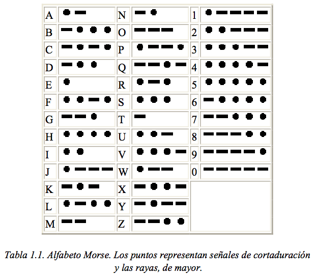
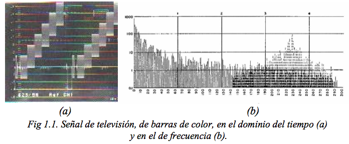

Comunicacions
El concepte de comunicació no és fàcil de definir i sovint s'assumeix que tots tenim intuïtivament la idea del que és. Per a les persones i animals, es pot definir com l'intercanvi d'informació entre individus mitjançant un sistema comú de símbols, bé sigui mitjançant llenguatge, signes o gestos. La definició anterior pot estendre també a la comunicació entre màquines, en aquest cas els símbols que representen la informació han de reunir característiques especials. La enginyeria de telecomunicació o enginyeria de comunicacions és la branca de l'enginyeria que s'ocupa de la generació, transmissió, recepció i processat de senyals ja sigui per mitjans elèctrics, elctromagneticos, electroacústics, òptics, etc., I els sistemes de telecomunicació són aquells que mitjançant l'ús de tècniques i dispositius adequats realitzen el transport d'informació entre una font i un o més destinataris finals.
Informació
Encara que també intuïtivament es té el concepte d'informació, el significat pot ser molt diferent segons el context en què es manegi. Així, per a una bona quantitat de gent el terme s'associa generalment amb el camp periodístic, radiofònic o televisiu. De fet, en nombroses institucions es cursen carreres designades com Ciències de la Comunicació o Ciències i Tecniques de la Informació que poc o res tenen a veure amb la ciència o l'enginyeria de comunicacions. No és estrany, per tant, que Jurgen Ruesch hagi identificat 40 varietats dels enfocaments interdisplinaris per al tema, incloent tòpics tan variats com els aspectes informals de la comunicació, implícits en l'atracció sexual o en el comportament davant el joc i identificant almenys 50 modes de comunicació interpersonal. Entre els aspectes d'importància tractats en aquest context cal esmentar la importància que es dóna en els mitjans massius de comunicació (ràdio, televisió, premsa i actualment Internet) a l'efecte dels missatges sobre l'audiència i l'estudi de tècniques de persuasió per tal d'influir en la disposició dels individus cap a la modificació d'hàbits de consum, simpatia política o creences religioses entre d'altres. Amb excepció de la premsa escrita, els sistemes de comunicacions transporten informació per aquests i altres fins. En aquest cas es pot dir que el tècnic de telecomunicació s'ocupa de dissenyar, instal·lar i mantenir el vehicle, però no té cap influència sobre el que dit vehicle transporta, és a dir, el contingut. En alguns casos, el tècnic de telecomunicació s'ha d'ocupar també del contingut, per exemple en alguns sistemes de comunicació entre màquines.
Donada la varietat d'interpretacions que es poden donar al terme informació, convé definir amb una mica més de precisió per als fins i objectius d'un curs de sistemes de comunicacions. Així, per informació s'entén aquí el conjunt de senyals, produïdes per fenòmens físics, registrats, classificats, organitzats i relacionats, amb un significat precís per a un destinatari específic.
Amb freqüència es parla també d'elements d'informació. En una comunicació de veu la informació flueix de manera contínua entre el transmissor i el receptor. Els elements d'informació són en aquest cas els augments infinitesimalment petits entre dos instants, també infinitesimalment petits, de la pressió de l'aire produïda per les cordes vocals del locutor o sobre el timpà de l'oient. En aquestes condicions la informació dóna lloc a una senyal contínua en el temps, o senyal analògica i els elements d'informació poden associar-se amb elements sil·làbics de la veu, però en el cas de musica aquesta associació resulta més dificil. En els sistemes digitals, per altra banda, els elements d'informació són discrets i fàcils d'identificar. Un exemple simple d'un sistema digital de comunicacions és la telegrafia i és interessant notar que aquest va ser anterior a la telefonia en diverses decades. En telegrafia els elements d'informació són polsos de curta i llarga durada (punts i ratlles) que, combinats de diverses formes representen de manera discreta els caràcters alfabètics i numèrics, així com alguns simbols ortogràfics i de control en la forma que s'il·lustra a la Taula 1.1.

El conjunt de diversos elements d'informació constitueix un simbol i, al seu torn, el conjunt de diversos símbols constitueix un missatge. L'alfabet Morse, utilitzat des de fa mes de 150 anys, no és mes que una de les moltes formes possibles de codificar els caràcters alfabètics mitjançant elements discrets. En termes molt simples, es pot dir que un missatge està compost per elements d'informació i que aquesta pot fluir de forma contínua o discreta entre el transmissor i el receptor. Així mateix, un missatge és una cosa que el receptor o el destinatari de la informació entén i que, en general no coneixia prèviament. Aquesta és una de les característiques fonamentals de la informació, és a dir, el desconeixement previ del seu contingut o, expressat en termes més tècnics, la seva aleatorietat. Un missatge conté més informació quant mes impredictible sigui aquesta. Una cosa que es coneix per endavant, en realitat conté molt poca o cap informació.
Senyals
Així mateix, per senyal s'entén la representació d'una magnitud física, detectable, variable en el temps, l'espai o tots dos, a la qual es pot assignar un determinat significat o contingut d'informació. Aqui, el terme senyal es refereix a senyals elèctriques, encara que en la seva forma original siguin d'una altra naturalesa, per exemple, acústiques, mecàniques, òptiques, etc., Que, en general, poden convertir-se a senyals elèctriques mitjançant transductors adequats.
Les senyals poden caracteritzar-se en el domini del temps o en el de freqüència. Les dues caracteritzacions representen el mateix fenomen. En els sistemes de tele-comunicació és usual la representació en el domini de freqüència, ja que aquesta proporciona informació sobre l'ample de banda en què està continguda l'energia de la senyal. En general, quan aquí es parla del domini de freqüència, s'entén pel la transformada de Fourier de la funció que descriu a la senyal en el domini del temps. En algunes aplicacions, principalment de processament de senyals s'empren altres transformacions com les del cosinus discret, la d'Hilbert, Haddamard, etc. A causa que la transformada de Fourier és complexa, la representació completa de la senyal en el domini de freqüència s'ha de fer en termes d'amplitud i de fase, si bé en la major part dels casos pràctics, és suficient la representació de l'espectre d'amplitud. L'aparell utilitzat per això es denomina analitzador d'espectre. A la figura 1.1 es mostra una senyal de televisió de color en el domini del temps, com es veuria en un oscil · loscopi i en el de freqüència, com es veuria en un analitzador d'espectre.

Les senyals generades per una font d'informació i convertides a senyals elèctriques, com ara la veu o una imatge són senyals de pas baix i sovint es designen també com senyals en banda base. No obstant això les senyals en banda base en els sistemes de comunicacions tenen un significat més ampli, ja que poden estar constituïdes per combinacions de senyals de pas baix. Tal és el cas de la telefonia multicanal en què el senyal en banda base multicanal pot estar formada per centenars de senyals de veu. La senyal en banda base de television conté almenys tres senyals: vídeo monocromatico o luminància, color i so. Aqui s'entén per senyal en banda base aquella que s'aplica a l'entrada del modulador d'un transmissor.
Transmissió en banda base
Quan es té més d'una senyal en banda base, per exemple senyals de veu, no poden transmetre simultàniament per un mateix canal de comunicació utilitzant el mateix espectre de freqüència, llevat que se les separi d'alguna manera, ja que de no fer-ho interferirien mútuament i el receptor seria incapaç de discernir cada senyal individual. Aquesta situació s'aprecia clarament quan diverses persones parlen alhora, en el mateix espai i amb el mateix nivell de veu. El mateix passaria si diverses persones utilitzen simultàniament una mateixa línia telefònica. D'això s'infereix que si la transmissió es realitza en banda base, es requereixen tants canals de comunicació independents com senyals hagi.